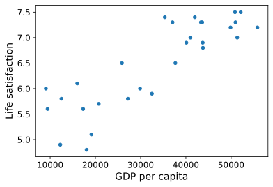
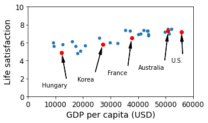
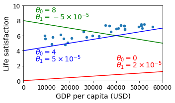
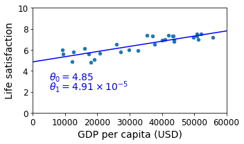
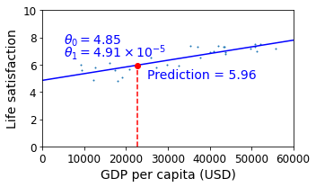
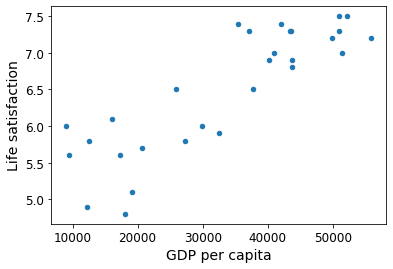
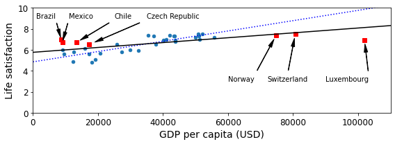
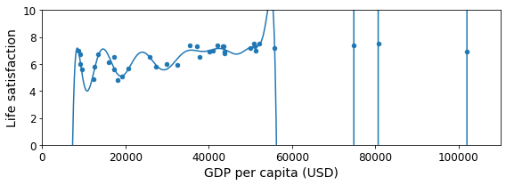

# Python ≥3.5 is required
import sys
assert sys.version_info >= (3, 5)Chapter 1 – The Machine Learning landscape
This is the code used to generate some of the figures in chapter 1.
Code example 1-1
Although Python 2.x may work, it is deprecated so we strongly recommend you use Python 3 instead.
# Scikit-Learn ≥0.20 is required
import sklearn
assert sklearn.__version__ >= "0.20"This function just merges the OECD’s life satisfaction data and the IMF’s GDP per capita data. It’s a bit too long and boring and it’s not specific to Machine Learning, which is why I left it out of the book.
def prepare_country_stats(oecd_bli, gdp_per_capita):
oecd_bli = oecd_bli[oecd_bli["INEQUALITY"]=="TOT"]
oecd_bli = oecd_bli.pivot(index="Country", columns="Indicator", values="Value")
gdp_per_capita.rename(columns={"2015": "GDP per capita"}, inplace=True)
gdp_per_capita.set_index("Country", inplace=True)
full_country_stats = pd.merge(left=oecd_bli, right=gdp_per_capita,
left_index=True, right_index=True)
full_country_stats.sort_values(by="GDP per capita", inplace=True)
remove_indices = [0, 1, 6, 8, 33, 34, 35]
keep_indices = list(set(range(36)) - set(remove_indices))
return full_country_stats[["GDP per capita", 'Life satisfaction']].iloc[keep_indices]The code in the book expects the data files to be located in the current directory. I just tweaked it here to fetch the files in datasets/lifesat.
import os
datapath = os.path.join("datasets", "lifesat", "")# To plot pretty figures directly within Jupyter
%matplotlib inline
import matplotlib as mpl
mpl.rc('axes', labelsize=14)
mpl.rc('xtick', labelsize=12)
mpl.rc('ytick', labelsize=12)# Download the data
import urllib.request
DOWNLOAD_ROOT = "https://raw.githubusercontent.com/ageron/handson-ml2/master/"
os.makedirs(datapath, exist_ok=True)
for filename in ("oecd_bli_2015.csv", "gdp_per_capita.csv"):
print("Downloading", filename)
url = DOWNLOAD_ROOT + "datasets/lifesat/" + filename
urllib.request.urlretrieve(url, datapath + filename)Downloading oecd_bli_2015.csv
Downloading gdp_per_capita.csv# Code example
import matplotlib.pyplot as plt
import numpy as np
import pandas as pd
import sklearn.linear_model
# Load the data
oecd_bli = pd.read_csv(datapath + "oecd_bli_2015.csv", thousands=',')
gdp_per_capita = pd.read_csv(datapath + "gdp_per_capita.csv",thousands=',',delimiter='\t',
encoding='latin1', na_values="n/a")
# Prepare the data
country_stats = prepare_country_stats(oecd_bli, gdp_per_capita)
X = np.c_[country_stats["GDP per capita"]]
y = np.c_[country_stats["Life satisfaction"]]
# Visualize the data
country_stats.plot(kind='scatter', x="GDP per capita", y='Life satisfaction')
plt.show()
# Select a linear model
model = sklearn.linear_model.LinearRegression()
# Train the model
model.fit(X, y)
# Make a prediction for Cyprus
X_new = [[22587]] # Cyprus' GDP per capita
print(model.predict(X_new)) # outputs [[ 5.96242338]]
[[5.96242338]]Replacing the Linear Regression model with k-Nearest Neighbors (in this example, k = 3) regression in the previous code is as simple as replacing these two lines:
import sklearn.linear_model
model = sklearn.linear_model.LinearRegression()with these two:
import sklearn.neighbors
model = sklearn.neighbors.KNeighborsRegressor(n_neighbors=3)# Select a 3-Nearest Neighbors regression model
import sklearn.neighbors
model1 = sklearn.neighbors.KNeighborsRegressor(n_neighbors=3)
# Train the model
model1.fit(X,y)
# Make a prediction for Cyprus
print(model1.predict(X_new)) # outputs [[5.76666667]][[5.76666667]]Note: you can ignore the rest of this notebook, it just generates many of the figures in chapter 1.
Create a function to save the figures.
# Where to save the figures
PROJECT_ROOT_DIR = "."
CHAPTER_ID = "fundamentals"
IMAGES_PATH = os.path.join(PROJECT_ROOT_DIR, "images", CHAPTER_ID)
os.makedirs(IMAGES_PATH, exist_ok=True)
def save_fig(fig_id, tight_layout=True, fig_extension="png", resolution=300):
path = os.path.join(IMAGES_PATH, fig_id + "." + fig_extension)
print("Saving figure", fig_id)
if tight_layout:
plt.tight_layout()
plt.savefig(path, format=fig_extension, dpi=resolution)Make this notebook’s output stable across runs:
np.random.seed(42)Load and prepare Life satisfaction data
If you want, you can get fresh data from the OECD’s website. Download the CSV from http://stats.oecd.org/index.aspx?DataSetCode=BLI and save it to datasets/lifesat/.
oecd_bli = pd.read_csv(datapath + "oecd_bli_2015.csv", thousands=',')
oecd_bli = oecd_bli[oecd_bli["INEQUALITY"]=="TOT"]
oecd_bli = oecd_bli.pivot(index="Country", columns="Indicator", values="Value")
oecd_bli.head(2)| Indicator | Air pollution | Assault rate | Consultation on rule-making | Dwellings without basic facilities | Educational attainment | Employees working very long hours | Employment rate | Homicide rate | Household net adjusted disposable income | Household net financial wealth | ... | Long-term unemployment rate | Personal earnings | Quality of support network | Rooms per person | Self-reported health | Student skills | Time devoted to leisure and personal care | Voter turnout | Water quality | Years in education |
|---|---|---|---|---|---|---|---|---|---|---|---|---|---|---|---|---|---|---|---|---|---|
| Country | |||||||||||||||||||||
| Australia | 13.0 | 2.1 | 10.5 | 1.1 | 76.0 | 14.02 | 72.0 | 0.8 | 31588.0 | 47657.0 | ... | 1.08 | 50449.0 | 92.0 | 2.3 | 85.0 | 512.0 | 14.41 | 93.0 | 91.0 | 19.4 |
| Austria | 27.0 | 3.4 | 7.1 | 1.0 | 83.0 | 7.61 | 72.0 | 0.4 | 31173.0 | 49887.0 | ... | 1.19 | 45199.0 | 89.0 | 1.6 | 69.0 | 500.0 | 14.46 | 75.0 | 94.0 | 17.0 |
2 rows × 24 columns
oecd_bli["Life satisfaction"].head()Country
Australia 7.3
Austria 6.9
Belgium 6.9
Brazil 7.0
Canada 7.3
Name: Life satisfaction, dtype: float64Load and prepare GDP per capita data
Just like above, you can update the GDP per capita data if you want. Just download data from http://goo.gl/j1MSKe (=> imf.org) and save it to datasets/lifesat/.
gdp_per_capita = pd.read_csv(datapath+"gdp_per_capita.csv", thousands=',', delimiter='\t',
encoding='latin1', na_values="n/a")
gdp_per_capita.rename(columns={"2015": "GDP per capita"}, inplace=True)
gdp_per_capita.set_index("Country", inplace=True)
gdp_per_capita.head(2)| Subject Descriptor | Units | Scale | Country/Series-specific Notes | GDP per capita | Estimates Start After | |
|---|---|---|---|---|---|---|
| Country | ||||||
| Afghanistan | Gross domestic product per capita, current prices | U.S. dollars | Units | See notes for: Gross domestic product, curren... | 599.994 | 2013.0 |
| Albania | Gross domestic product per capita, current prices | U.S. dollars | Units | See notes for: Gross domestic product, curren... | 3995.383 | 2010.0 |
full_country_stats = pd.merge(left=oecd_bli, right=gdp_per_capita, left_index=True, right_index=True)
full_country_stats.sort_values(by="GDP per capita", inplace=True)
full_country_stats| Air pollution | Assault rate | Consultation on rule-making | Dwellings without basic facilities | Educational attainment | Employees working very long hours | Employment rate | Homicide rate | Household net adjusted disposable income | Household net financial wealth | ... | Time devoted to leisure and personal care | Voter turnout | Water quality | Years in education | Subject Descriptor | Units | Scale | Country/Series-specific Notes | GDP per capita | Estimates Start After | |
|---|---|---|---|---|---|---|---|---|---|---|---|---|---|---|---|---|---|---|---|---|---|
| Country | |||||||||||||||||||||
| Brazil | 18.0 | 7.9 | 4.0 | 6.7 | 45.0 | 10.41 | 67.0 | 25.5 | 11664.0 | 6844.0 | ... | 14.97 | 79.0 | 72.0 | 16.3 | Gross domestic product per capita, current prices | U.S. dollars | Units | See notes for: Gross domestic product, curren... | 8669.998 | 2014.0 |
| Mexico | 30.0 | 12.8 | 9.0 | 4.2 | 37.0 | 28.83 | 61.0 | 23.4 | 13085.0 | 9056.0 | ... | 13.89 | 63.0 | 67.0 | 14.4 | Gross domestic product per capita, current prices | U.S. dollars | Units | See notes for: Gross domestic product, curren... | 9009.280 | 2015.0 |
| Russia | 15.0 | 3.8 | 2.5 | 15.1 | 94.0 | 0.16 | 69.0 | 12.8 | 19292.0 | 3412.0 | ... | 14.97 | 65.0 | 56.0 | 16.0 | Gross domestic product per capita, current prices | U.S. dollars | Units | See notes for: Gross domestic product, curren... | 9054.914 | 2015.0 |
| Turkey | 35.0 | 5.0 | 5.5 | 12.7 | 34.0 | 40.86 | 50.0 | 1.2 | 14095.0 | 3251.0 | ... | 13.42 | 88.0 | 62.0 | 16.4 | Gross domestic product per capita, current prices | U.S. dollars | Units | See notes for: Gross domestic product, curren... | 9437.372 | 2013.0 |
| Hungary | 15.0 | 3.6 | 7.9 | 4.8 | 82.0 | 3.19 | 58.0 | 1.3 | 15442.0 | 13277.0 | ... | 15.04 | 62.0 | 77.0 | 17.6 | Gross domestic product per capita, current prices | U.S. dollars | Units | See notes for: Gross domestic product, curren... | 12239.894 | 2015.0 |
| Poland | 33.0 | 1.4 | 10.8 | 3.2 | 90.0 | 7.41 | 60.0 | 0.9 | 17852.0 | 10919.0 | ... | 14.20 | 55.0 | 79.0 | 18.4 | Gross domestic product per capita, current prices | U.S. dollars | Units | See notes for: Gross domestic product, curren... | 12495.334 | 2014.0 |
| Chile | 46.0 | 6.9 | 2.0 | 9.4 | 57.0 | 15.42 | 62.0 | 4.4 | 14533.0 | 17733.0 | ... | 14.41 | 49.0 | 73.0 | 16.5 | Gross domestic product per capita, current prices | U.S. dollars | Units | See notes for: Gross domestic product, curren... | 13340.905 | 2014.0 |
| Slovak Republic | 13.0 | 3.0 | 6.6 | 0.6 | 92.0 | 7.02 | 60.0 | 1.2 | 17503.0 | 8663.0 | ... | 14.99 | 59.0 | 81.0 | 16.3 | Gross domestic product per capita, current prices | U.S. dollars | Units | See notes for: Gross domestic product, curren... | 15991.736 | 2015.0 |
| Czech Republic | 16.0 | 2.8 | 6.8 | 0.9 | 92.0 | 6.98 | 68.0 | 0.8 | 18404.0 | 17299.0 | ... | 14.98 | 59.0 | 85.0 | 18.1 | Gross domestic product per capita, current prices | U.S. dollars | Units | See notes for: Gross domestic product, curren... | 17256.918 | 2015.0 |
| Estonia | 9.0 | 5.5 | 3.3 | 8.1 | 90.0 | 3.30 | 68.0 | 4.8 | 15167.0 | 7680.0 | ... | 14.90 | 64.0 | 79.0 | 17.5 | Gross domestic product per capita, current prices | U.S. dollars | Units | See notes for: Gross domestic product, curren... | 17288.083 | 2014.0 |
| Greece | 27.0 | 3.7 | 6.5 | 0.7 | 68.0 | 6.16 | 49.0 | 1.6 | 18575.0 | 14579.0 | ... | 14.91 | 64.0 | 69.0 | 18.6 | Gross domestic product per capita, current prices | U.S. dollars | Units | See notes for: Gross domestic product, curren... | 18064.288 | 2014.0 |
| Portugal | 18.0 | 5.7 | 6.5 | 0.9 | 38.0 | 9.62 | 61.0 | 1.1 | 20086.0 | 31245.0 | ... | 14.95 | 58.0 | 86.0 | 17.6 | Gross domestic product per capita, current prices | U.S. dollars | Units | See notes for: Gross domestic product, curren... | 19121.592 | 2014.0 |
| Slovenia | 26.0 | 3.9 | 10.3 | 0.5 | 85.0 | 5.63 | 63.0 | 0.4 | 19326.0 | 18465.0 | ... | 14.62 | 52.0 | 88.0 | 18.4 | Gross domestic product per capita, current prices | U.S. dollars | Units | See notes for: Gross domestic product, curren... | 20732.482 | 2015.0 |
| Spain | 24.0 | 4.2 | 7.3 | 0.1 | 55.0 | 5.89 | 56.0 | 0.6 | 22477.0 | 24774.0 | ... | 16.06 | 69.0 | 71.0 | 17.6 | Gross domestic product per capita, current prices | U.S. dollars | Units | See notes for: Gross domestic product, curren... | 25864.721 | 2014.0 |
| Korea | 30.0 | 2.1 | 10.4 | 4.2 | 82.0 | 18.72 | 64.0 | 1.1 | 19510.0 | 29091.0 | ... | 14.63 | 76.0 | 78.0 | 17.5 | Gross domestic product per capita, current prices | U.S. dollars | Units | See notes for: Gross domestic product, curren... | 27195.197 | 2014.0 |
| Italy | 21.0 | 4.7 | 5.0 | 1.1 | 57.0 | 3.66 | 56.0 | 0.7 | 25166.0 | 54987.0 | ... | 14.98 | 75.0 | 71.0 | 16.8 | Gross domestic product per capita, current prices | U.S. dollars | Units | See notes for: Gross domestic product, curren... | 29866.581 | 2015.0 |
| Japan | 24.0 | 1.4 | 7.3 | 6.4 | 94.0 | 22.26 | 72.0 | 0.3 | 26111.0 | 86764.0 | ... | 14.93 | 53.0 | 85.0 | 16.3 | Gross domestic product per capita, current prices | U.S. dollars | Units | See notes for: Gross domestic product, curren... | 32485.545 | 2015.0 |
| Israel | 21.0 | 6.4 | 2.5 | 3.7 | 85.0 | 16.03 | 67.0 | 2.3 | 22104.0 | 52933.0 | ... | 14.48 | 68.0 | 68.0 | 15.8 | Gross domestic product per capita, current prices | U.S. dollars | Units | See notes for: Gross domestic product, curren... | 35343.336 | 2015.0 |
| New Zealand | 11.0 | 2.2 | 10.3 | 0.2 | 74.0 | 13.87 | 73.0 | 1.2 | 23815.0 | 28290.0 | ... | 14.87 | 77.0 | 89.0 | 18.1 | Gross domestic product per capita, current prices | U.S. dollars | Units | See notes for: Gross domestic product, curren... | 37044.891 | 2015.0 |
| France | 12.0 | 5.0 | 3.5 | 0.5 | 73.0 | 8.15 | 64.0 | 0.6 | 28799.0 | 48741.0 | ... | 15.33 | 80.0 | 82.0 | 16.4 | Gross domestic product per capita, current prices | U.S. dollars | Units | See notes for: Gross domestic product, curren... | 37675.006 | 2015.0 |
| Belgium | 21.0 | 6.6 | 4.5 | 2.0 | 72.0 | 4.57 | 62.0 | 1.1 | 28307.0 | 83876.0 | ... | 15.71 | 89.0 | 87.0 | 18.9 | Gross domestic product per capita, current prices | U.S. dollars | Units | See notes for: Gross domestic product, curren... | 40106.632 | 2014.0 |
| Germany | 16.0 | 3.6 | 4.5 | 0.1 | 86.0 | 5.25 | 73.0 | 0.5 | 31252.0 | 50394.0 | ... | 15.31 | 72.0 | 95.0 | 18.2 | Gross domestic product per capita, current prices | U.S. dollars | Units | See notes for: Gross domestic product, curren... | 40996.511 | 2014.0 |
| Finland | 15.0 | 2.4 | 9.0 | 0.6 | 85.0 | 3.58 | 69.0 | 1.4 | 27927.0 | 18761.0 | ... | 14.89 | 69.0 | 94.0 | 19.7 | Gross domestic product per capita, current prices | U.S. dollars | Units | See notes for: Gross domestic product, curren... | 41973.988 | 2014.0 |
| Canada | 15.0 | 1.3 | 10.5 | 0.2 | 89.0 | 3.94 | 72.0 | 1.5 | 29365.0 | 67913.0 | ... | 14.25 | 61.0 | 91.0 | 17.2 | Gross domestic product per capita, current prices | U.S. dollars | Units | See notes for: Gross domestic product, curren... | 43331.961 | 2015.0 |
| Netherlands | 30.0 | 4.9 | 6.1 | 0.0 | 73.0 | 0.45 | 74.0 | 0.9 | 27888.0 | 77961.0 | ... | 15.44 | 75.0 | 92.0 | 18.7 | Gross domestic product per capita, current prices | U.S. dollars | Units | See notes for: Gross domestic product, curren... | 43603.115 | 2014.0 |
| Austria | 27.0 | 3.4 | 7.1 | 1.0 | 83.0 | 7.61 | 72.0 | 0.4 | 31173.0 | 49887.0 | ... | 14.46 | 75.0 | 94.0 | 17.0 | Gross domestic product per capita, current prices | U.S. dollars | Units | See notes for: Gross domestic product, curren... | 43724.031 | 2015.0 |
| United Kingdom | 13.0 | 1.9 | 11.5 | 0.2 | 78.0 | 12.70 | 71.0 | 0.3 | 27029.0 | 60778.0 | ... | 14.83 | 66.0 | 88.0 | 16.4 | Gross domestic product per capita, current prices | U.S. dollars | Units | See notes for: Gross domestic product, curren... | 43770.688 | 2015.0 |
| Sweden | 10.0 | 5.1 | 10.9 | 0.0 | 88.0 | 1.13 | 74.0 | 0.7 | 29185.0 | 60328.0 | ... | 15.11 | 86.0 | 95.0 | 19.3 | Gross domestic product per capita, current prices | U.S. dollars | Units | See notes for: Gross domestic product, curren... | 49866.266 | 2014.0 |
| Iceland | 18.0 | 2.7 | 5.1 | 0.4 | 71.0 | 12.25 | 82.0 | 0.3 | 23965.0 | 43045.0 | ... | 14.61 | 81.0 | 97.0 | 19.8 | Gross domestic product per capita, current prices | U.S. dollars | Units | See notes for: Gross domestic product, curren... | 50854.583 | 2014.0 |
| Australia | 13.0 | 2.1 | 10.5 | 1.1 | 76.0 | 14.02 | 72.0 | 0.8 | 31588.0 | 47657.0 | ... | 14.41 | 93.0 | 91.0 | 19.4 | Gross domestic product per capita, current prices | U.S. dollars | Units | See notes for: Gross domestic product, curren... | 50961.865 | 2014.0 |
| Ireland | 13.0 | 2.6 | 9.0 | 0.2 | 75.0 | 4.20 | 60.0 | 0.8 | 23917.0 | 31580.0 | ... | 15.19 | 70.0 | 80.0 | 17.6 | Gross domestic product per capita, current prices | U.S. dollars | Units | See notes for: Gross domestic product, curren... | 51350.744 | 2014.0 |
| Denmark | 15.0 | 3.9 | 7.0 | 0.9 | 78.0 | 2.03 | 73.0 | 0.3 | 26491.0 | 44488.0 | ... | 16.06 | 88.0 | 94.0 | 19.4 | Gross domestic product per capita, current prices | U.S. dollars | Units | See notes for: Gross domestic product, curren... | 52114.165 | 2015.0 |
| United States | 18.0 | 1.5 | 8.3 | 0.1 | 89.0 | 11.30 | 67.0 | 5.2 | 41355.0 | 145769.0 | ... | 14.27 | 68.0 | 85.0 | 17.2 | Gross domestic product per capita, current prices | U.S. dollars | Units | See notes for: Gross domestic product, curren... | 55805.204 | 2015.0 |
| Norway | 16.0 | 3.3 | 8.1 | 0.3 | 82.0 | 2.82 | 75.0 | 0.6 | 33492.0 | 8797.0 | ... | 15.56 | 78.0 | 94.0 | 17.9 | Gross domestic product per capita, current prices | U.S. dollars | Units | See notes for: Gross domestic product, curren... | 74822.106 | 2015.0 |
| Switzerland | 20.0 | 4.2 | 8.4 | 0.0 | 86.0 | 6.72 | 80.0 | 0.5 | 33491.0 | 108823.0 | ... | 14.98 | 49.0 | 96.0 | 17.3 | Gross domestic product per capita, current prices | U.S. dollars | Units | See notes for: Gross domestic product, curren... | 80675.308 | 2015.0 |
| Luxembourg | 12.0 | 4.3 | 6.0 | 0.1 | 78.0 | 3.47 | 66.0 | 0.4 | 38951.0 | 61765.0 | ... | 15.12 | 91.0 | 86.0 | 15.1 | Gross domestic product per capita, current prices | U.S. dollars | Units | See notes for: Gross domestic product, curren... | 101994.093 | 2014.0 |
36 rows × 30 columns
full_country_stats[["GDP per capita", 'Life satisfaction']].loc["United States"]GDP per capita 55805.204
Life satisfaction 7.200
Name: United States, dtype: float64remove_indices = [0, 1, 6, 8, 33, 34, 35]
keep_indices = list(set(range(36)) - set(remove_indices))
sample_data = full_country_stats[["GDP per capita", 'Life satisfaction']].iloc[keep_indices]
missing_data = full_country_stats[["GDP per capita", 'Life satisfaction']].iloc[remove_indices]sample_data.plot(kind='scatter', x="GDP per capita", y='Life satisfaction', figsize=(5,3))
plt.axis([0, 60000, 0, 10])
position_text = {
"Hungary": (5000, 1),
"Korea": (18000, 1.7),
"France": (29000, 2.4),
"Australia": (40000, 3.0),
"United States": (52000, 3.8),
}
for country, pos_text in position_text.items():
pos_data_x, pos_data_y = sample_data.loc[country]
country = "U.S." if country == "United States" else country
plt.annotate(country, xy=(pos_data_x, pos_data_y), xytext=pos_text,
arrowprops=dict(facecolor='black', width=0.5, shrink=0.1, headwidth=5))
plt.plot(pos_data_x, pos_data_y, "ro")
plt.xlabel("GDP per capita (USD)")
save_fig('money_happy_scatterplot')
plt.show()Saving figure money_happy_scatterplot
sample_data.to_csv(os.path.join("datasets", "lifesat", "lifesat.csv"))sample_data.loc[list(position_text.keys())]| GDP per capita | Life satisfaction | |
|---|---|---|
| Country | ||
| Hungary | 12239.894 | 4.9 |
| Korea | 27195.197 | 5.8 |
| France | 37675.006 | 6.5 |
| Australia | 50961.865 | 7.3 |
| United States | 55805.204 | 7.2 |
import numpy as np
sample_data.plot(kind='scatter', x="GDP per capita", y='Life satisfaction', figsize=(5,3))
plt.xlabel("GDP per capita (USD)")
plt.axis([0, 60000, 0, 10])
X=np.linspace(0, 60000, 1000)
plt.plot(X, 2*X/100000, "r")
plt.text(40000, 2.7, r"$\theta_0 = 0$", fontsize=14, color="r")
plt.text(40000, 1.8, r"$\theta_1 = 2 \times 10^{-5}$", fontsize=14, color="r")
plt.plot(X, 8 - 5*X/100000, "g")
plt.text(5000, 9.1, r"$\theta_0 = 8$", fontsize=14, color="g")
plt.text(5000, 8.2, r"$\theta_1 = -5 \times 10^{-5}$", fontsize=14, color="g")
plt.plot(X, 4 + 5*X/100000, "b")
plt.text(5000, 3.5, r"$\theta_0 = 4$", fontsize=14, color="b")
plt.text(5000, 2.6, r"$\theta_1 = 5 \times 10^{-5}$", fontsize=14, color="b")
save_fig('tweaking_model_params_plot')
plt.show()Saving figure tweaking_model_params_plot
from sklearn import linear_model
lin1 = linear_model.LinearRegression()
Xsample = np.c_[sample_data["GDP per capita"]]
ysample = np.c_[sample_data["Life satisfaction"]]
lin1.fit(Xsample, ysample)
t0, t1 = lin1.intercept_[0], lin1.coef_[0][0]
t0, t1(4.853052800266436, 4.911544589158484e-05)sample_data.plot(kind='scatter', x="GDP per capita", y='Life satisfaction', figsize=(5,3))
plt.xlabel("GDP per capita (USD)")
plt.axis([0, 60000, 0, 10])
X=np.linspace(0, 60000, 1000)
plt.plot(X, t0 + t1*X, "b")
plt.text(5000, 3.1, r"$\theta_0 = 4.85$", fontsize=14, color="b")
plt.text(5000, 2.2, r"$\theta_1 = 4.91 \times 10^{-5}$", fontsize=14, color="b")
save_fig('best_fit_model_plot')
plt.show()Saving figure best_fit_model_plot
cyprus_gdp_per_capita = gdp_per_capita.loc["Cyprus"]["GDP per capita"]
print(cyprus_gdp_per_capita)
cyprus_predicted_life_satisfaction = lin1.predict([[cyprus_gdp_per_capita]])[0][0]
cyprus_predicted_life_satisfaction22587.495.96244744318815sample_data.plot(kind='scatter', x="GDP per capita", y='Life satisfaction', figsize=(5,3), s=1)
plt.xlabel("GDP per capita (USD)")
X=np.linspace(0, 60000, 1000)
plt.plot(X, t0 + t1*X, "b")
plt.axis([0, 60000, 0, 10])
plt.text(5000, 7.5, r"$\theta_0 = 4.85$", fontsize=14, color="b")
plt.text(5000, 6.6, r"$\theta_1 = 4.91 \times 10^{-5}$", fontsize=14, color="b")
plt.plot([cyprus_gdp_per_capita, cyprus_gdp_per_capita], [0, cyprus_predicted_life_satisfaction], "r--")
plt.text(25000, 5.0, r"Prediction = 5.96", fontsize=14, color="b")
plt.plot(cyprus_gdp_per_capita, cyprus_predicted_life_satisfaction, "ro")
save_fig('cyprus_prediction_plot')
plt.show()Saving figure cyprus_prediction_plot
sample_data[7:10]| GDP per capita | Life satisfaction | |
|---|---|---|
| Country | ||
| Portugal | 19121.592 | 5.1 |
| Slovenia | 20732.482 | 5.7 |
| Spain | 25864.721 | 6.5 |
(5.1+5.7+6.5)/35.766666666666667backup = oecd_bli, gdp_per_capita
def prepare_country_stats(oecd_bli, gdp_per_capita):
oecd_bli = oecd_bli[oecd_bli["INEQUALITY"]=="TOT"]
oecd_bli = oecd_bli.pivot(index="Country", columns="Indicator", values="Value")
gdp_per_capita.rename(columns={"2015": "GDP per capita"}, inplace=True)
gdp_per_capita.set_index("Country", inplace=True)
full_country_stats = pd.merge(left=oecd_bli, right=gdp_per_capita,
left_index=True, right_index=True)
full_country_stats.sort_values(by="GDP per capita", inplace=True)
remove_indices = [0, 1, 6, 8, 33, 34, 35]
keep_indices = list(set(range(36)) - set(remove_indices))
return full_country_stats[["GDP per capita", 'Life satisfaction']].iloc[keep_indices]# Code example
import matplotlib.pyplot as plt
import numpy as np
import pandas as pd
import sklearn.linear_model
# Load the data
oecd_bli = pd.read_csv(datapath + "oecd_bli_2015.csv", thousands=',')
gdp_per_capita = pd.read_csv(datapath + "gdp_per_capita.csv",thousands=',',delimiter='\t',
encoding='latin1', na_values="n/a")
# Prepare the data
country_stats = prepare_country_stats(oecd_bli, gdp_per_capita)
X = np.c_[country_stats["GDP per capita"]]
y = np.c_[country_stats["Life satisfaction"]]
# Visualize the data
country_stats.plot(kind='scatter', x="GDP per capita", y='Life satisfaction')
plt.show()
# Select a linear model
model = sklearn.linear_model.LinearRegression()
# Train the model
model.fit(X, y)
# Make a prediction for Cyprus
X_new = [[22587]] # Cyprus' GDP per capita
print(model.predict(X_new)) # outputs [[ 5.96242338]]
[[5.96242338]]oecd_bli, gdp_per_capita = backupmissing_data| GDP per capita | Life satisfaction | |
|---|---|---|
| Country | ||
| Brazil | 8669.998 | 7.0 |
| Mexico | 9009.280 | 6.7 |
| Chile | 13340.905 | 6.7 |
| Czech Republic | 17256.918 | 6.5 |
| Norway | 74822.106 | 7.4 |
| Switzerland | 80675.308 | 7.5 |
| Luxembourg | 101994.093 | 6.9 |
position_text2 = {
"Brazil": (1000, 9.0),
"Mexico": (11000, 9.0),
"Chile": (25000, 9.0),
"Czech Republic": (35000, 9.0),
"Norway": (60000, 3),
"Switzerland": (72000, 3.0),
"Luxembourg": (90000, 3.0),
}sample_data.plot(kind='scatter', x="GDP per capita", y='Life satisfaction', figsize=(8,3))
plt.axis([0, 110000, 0, 10])
for country, pos_text in position_text2.items():
pos_data_x, pos_data_y = missing_data.loc[country]
plt.annotate(country, xy=(pos_data_x, pos_data_y), xytext=pos_text,
arrowprops=dict(facecolor='black', width=0.5, shrink=0.1, headwidth=5))
plt.plot(pos_data_x, pos_data_y, "rs")
X=np.linspace(0, 110000, 1000)
plt.plot(X, t0 + t1*X, "b:")
lin_reg_full = linear_model.LinearRegression()
Xfull = np.c_[full_country_stats["GDP per capita"]]
yfull = np.c_[full_country_stats["Life satisfaction"]]
lin_reg_full.fit(Xfull, yfull)
t0full, t1full = lin_reg_full.intercept_[0], lin_reg_full.coef_[0][0]
X = np.linspace(0, 110000, 1000)
plt.plot(X, t0full + t1full * X, "k")
plt.xlabel("GDP per capita (USD)")
save_fig('representative_training_data_scatterplot')
plt.show()Saving figure representative_training_data_scatterplot
full_country_stats.plot(kind='scatter', x="GDP per capita", y='Life satisfaction', figsize=(8,3))
plt.axis([0, 110000, 0, 10])
from sklearn import preprocessing
from sklearn import pipeline
poly = preprocessing.PolynomialFeatures(degree=30, include_bias=False)
scaler = preprocessing.StandardScaler()
lin_reg2 = linear_model.LinearRegression()
pipeline_reg = pipeline.Pipeline([('poly', poly), ('scal', scaler), ('lin', lin_reg2)])
pipeline_reg.fit(Xfull, yfull)
curve = pipeline_reg.predict(X[:, np.newaxis])
plt.plot(X, curve)
plt.xlabel("GDP per capita (USD)")
save_fig('overfitting_model_plot')
plt.show()Saving figure overfitting_model_plot
full_country_stats.loc[[c for c in full_country_stats.index if "W" in c.upper()]]["Life satisfaction"]Country
New Zealand 7.3
Sweden 7.2
Norway 7.4
Switzerland 7.5
Name: Life satisfaction, dtype: float64gdp_per_capita.loc[[c for c in gdp_per_capita.index if "W" in c.upper()]].head()| Subject Descriptor | Units | Scale | Country/Series-specific Notes | GDP per capita | Estimates Start After | |
|---|---|---|---|---|---|---|
| Country | ||||||
| Botswana | Gross domestic product per capita, current prices | U.S. dollars | Units | See notes for: Gross domestic product, curren... | 6040.957 | 2008.0 |
| Kuwait | Gross domestic product per capita, current prices | U.S. dollars | Units | See notes for: Gross domestic product, curren... | 29363.027 | 2014.0 |
| Malawi | Gross domestic product per capita, current prices | U.S. dollars | Units | See notes for: Gross domestic product, curren... | 354.275 | 2011.0 |
| New Zealand | Gross domestic product per capita, current prices | U.S. dollars | Units | See notes for: Gross domestic product, curren... | 37044.891 | 2015.0 |
| Norway | Gross domestic product per capita, current prices | U.S. dollars | Units | See notes for: Gross domestic product, curren... | 74822.106 | 2015.0 |
plt.figure(figsize=(8,3))
plt.xlabel("GDP per capita")
plt.ylabel('Life satisfaction')
plt.plot(list(sample_data["GDP per capita"]), list(sample_data["Life satisfaction"]), "bo")
plt.plot(list(missing_data["GDP per capita"]), list(missing_data["Life satisfaction"]), "rs")
X = np.linspace(0, 110000, 1000)
plt.plot(X, t0full + t1full * X, "r--", label="Linear model on all data")
plt.plot(X, t0 + t1*X, "b:", label="Linear model on partial data")
ridge = linear_model.Ridge(alpha=10**9.5)
Xsample = np.c_[sample_data["GDP per capita"]]
ysample = np.c_[sample_data["Life satisfaction"]]
ridge.fit(Xsample, ysample)
t0ridge, t1ridge = ridge.intercept_[0], ridge.coef_[0][0]
plt.plot(X, t0ridge + t1ridge * X, "b", label="Regularized linear model on partial data")
plt.legend(loc="lower right")
plt.axis([0, 110000, 0, 10])
plt.xlabel("GDP per capita (USD)")
save_fig('ridge_model_plot')
plt.show()Saving figure ridge_model_plot